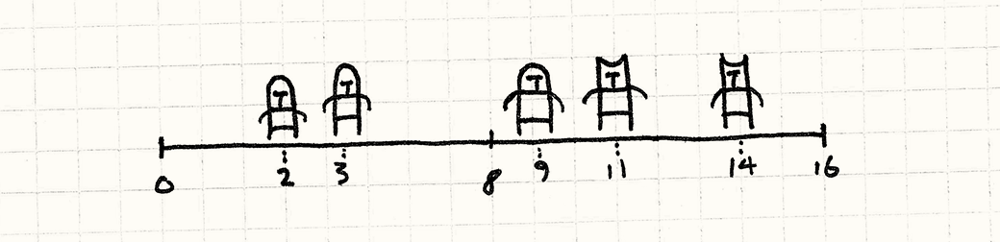
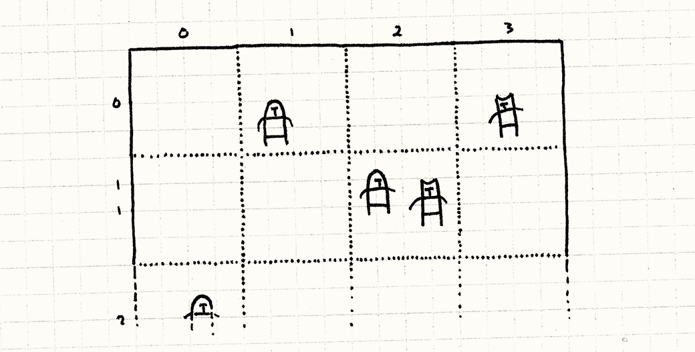
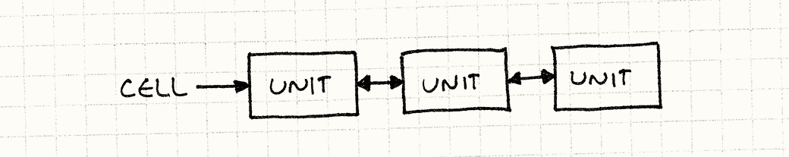
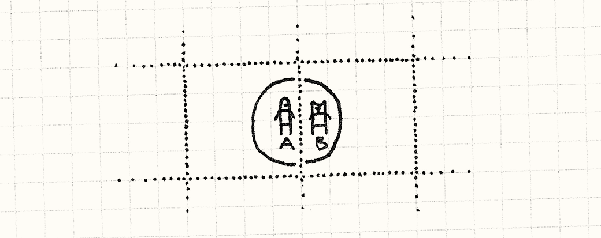
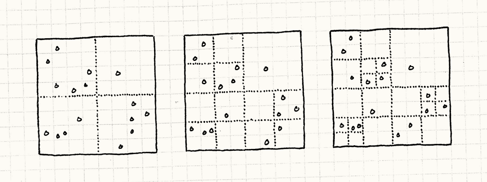

Spatial Partition
Game Programming PatternsOptimization Patterns
Intent
Efficiently locate objects by storing them in a data structure organized by their positions.
Motivation
Games let us visit other worlds, but those worlds typically aren’t so different from our own. They often share the same basic physics and tangibility of our universe. This is why they can feel real despite being crafted of mere bits and pixels.
One bit of fake reality that we’ll focus on here is location. Game worlds have a sense of space, and objects are somewhere in that space. This manifests itself in a bunch of ways. The obvious one is physics — objects move, collide, and interact — but there are other examples. The audio engine may take into account where sound sources are relative to the player so that distant sounds are quieter. Online chat may be restricted to nearby players.
This means your game engine often needs to answer to the question, “What objects are near this location?” If it has to answer this enough times each frame, it can start to be a performance bottleneck.
Units on the field of battle
Say we’re making a real-time strategy game. Opposing armies with hundreds of units will clash together on the field of battle. Warriors need to know which nearby enemy to swing their blades at. The naïve way to handle this is by looking at every pair of units and seeing how close they are to each other:
void handleMelee(Unit* units[], int numUnits)
{
for (int a = 0; a < numUnits - 1; a++)
{
for (int b = a + 1; b < numUnits; b++)
{
if (units[a]->position() == units[b]->position())
{
handleAttack(units[a], units[b]);
}
}
}
}
Here we have a doubly nested loop where each loop is walking all of the units on the battlefield. That means the number of pairwise tests we have to perform each frame increases with the square of the number of units. Each additional unit we add has to be compared to all of the previous ones. With a large number of units, that can spiral out of control.
Drawing battle lines
The problem we’re running into is that there’s no underlying order to the array of units. To find a unit near some location, we have to walk the entire array. Now, imagine we simplify our game a bit. Instead of a 2D battlefield, imagine it’s a 1D battleline.

In that case, we could make things easier on ourselves by sorting the array of units by their positions on the battleline. Once we do that, we can use something like a binary search to find nearby units without having to scan the entire array.
The lesson is pretty obvious: if we store our objects in a data structure organized by their locations, we can find them much more quickly. This pattern is about applying that idea to spaces that have more than one dimension.
The Pattern
For a set of objects, each has a position in space. Store them in a spatial data structure that organizes the objects by their positions. This data structure lets you efficiently query for objects at or near a location. When an object’s position changes, update the spatial data structure so that it can continue to find the object.
When to Use It
This is a common pattern for storing both live, moving game objects and also the static art and geometry of the game world. Sophisticated games often have multiple spatial partitions for different kinds of content.
The basic requirements for this pattern are that you have a set of objects that each have some kind of position and that you are doing enough queries to find objects by location that your performance is suffering.
Keep in Mind
Spatial partitions exist to knock an O(n) or O(n²) operation down to something more manageable. The more objects you have, the more valuable that becomes. Conversely, if your n is small enough, it may not be worth the bother.
Since this pattern involves organizing objects by their positions, objects that change position are harder to deal with. You’ll have to reorganize the data structure to keep track of an object at a new location, and that adds code complexity and spends CPU cycles. Make sure the trade-off is worth it.
A spatial partition also uses additional memory for its bookkeeping data structures. Like many optimizations, it trades memory for speed. If you’re shorter on memory than you are on clock cycles, that may be a losing proposition.
Sample Code
The nature of patterns is that they vary — each implementation will be a bit different, and spatial partitions are no exception. Unlike other patterns, though, many of these variations are well-documented. Academia likes publishing papers that prove performance gains. Since I only care about the concept behind the pattern, I’m going to show you the simplest spatial partition: a fixed grid.
A sheet of graph paper
Imagine the entire field of battle. Now, superimpose a grid of fixed-size squares onto it like a sheet of graph paper. Instead of storing our units in a single array, we put them in the cells of this grid. Each cell stores the list of units whose positions are within that cell’s boundary.

When we handle combat, we only consider units within the same cell. Instead of comparing each unit in the game with every other unit, we’ve partitioned the battlefield into a bunch of smaller mini-battlefields, each with many fewer units.
A grid of linked units
OK, let’s get coding. First, some prep work. Here’s our basic Unit class:
class Unit
{
friend class Grid;
public:
Unit(Grid* grid, double x, double y)
: grid_(grid),
x_(x),
y_(y)
{}
void move(double x, double y);
private:
double x_, y_;
Grid* grid_;
};
Each unit has a position (in 2D) and a pointer to the Grid that it lives on.
We make Grid a friend class because, as we’ll see, when a unit’s position
changes, it has to do an intricate dance with the grid to make sure everything
is updated correctly.
Here’s a sketch of the grid:
class Grid
{
public:
Grid()
{
// Clear the grid.
for (int x = 0; x < NUM_CELLS; x++)
{
for (int y = 0; y < NUM_CELLS; y++)
{
cells_[x][y] = NULL;
}
}
}
static const int NUM_CELLS = 10;
static const int CELL_SIZE = 20;
private:
Unit* cells_[NUM_CELLS][NUM_CELLS];
};
Note that each cell is just a pointer to a unit. Next,
we’ll extend Unit with next and prev pointers:
class Unit
{
// Previous code...
private:
Unit* prev_;
Unit* next_;
};
This lets us organize units into a doubly linked list instead of an array.

Each cell in the grid points to the first unit in the list of units within that cell, and each unit has pointers to the units before it and after it in the list. We’ll see why soon.
Entering the field of battle
The first thing we need to do is make sure new units are actually placed into
the grid when they are created. We’ll make Unit handle this in its
constructor:
Unit::Unit(Grid* grid, double x, double y)
: grid_(grid),
x_(x),
y_(y),
prev_(NULL),
next_(NULL)
{
grid_->add(this);
}
This add() method is defined like so:
void Grid::add(Unit* unit)
{
// Determine which grid cell it's in.
int cellX = (int)(unit->x_ / Grid::CELL_SIZE);
int cellY = (int)(unit->y_ / Grid::CELL_SIZE);
// Add to the front of list for the cell it's in.
unit->prev_ = NULL;
unit->next_ = cells_[cellX][cellY];
cells_[cellX][cellY] = unit;
if (unit->next_ != NULL)
{
unit->next_->prev_ = unit;
}
}
It’s a little finicky like linked list code always is, but the basic idea is pretty simple. We find the cell that the unit is sitting in and then add it to the front of that list. If there is already a list of units there, we link it in after the new unit.
A clash of swords
Once all of the units are nestled in their cells, we can let them start hacking at each other. With this new grid, the main method for handling combat looks like this:
void Grid::handleMelee()
{
for (int x = 0; x < NUM_CELLS; x++)
{
for (int y = 0; y < NUM_CELLS; y++)
{
handleCell(cells_[x][y]);
}
}
}
It walks each cell and then calls handleCell() on it. As you can see, we
really have partitioned the battlefield into little isolated skirmishes. Each
cell then handles its combat like so:
void Grid::handleCell(Unit* unit)
{
while (unit != NULL)
{
Unit* other = unit->next_;
while (other != NULL)
{
if (unit->x_ == other->x_ &&
unit->y_ == other->y_)
{
handleAttack(unit, other);
}
other = other->next_;
}
unit = unit->next_;
}
}
Aside from the pointer shenanigans to deal with walking a linked list, note that this is exactly like our original naïve method for handling combat. It compares each pair of units to see if they’re in the same position.
The only difference is that we no longer have to compare all of the units in the battle to each other — just the ones close enough to be in the same cell. That’s the heart of the optimization.
Charging forward
We’ve solved our performance problem, but we’ve created a new problem in its stead. Units are now stuck in their cells. If we move a unit past the boundary of the cell that contains it, units in the cell won’t see it anymore, but neither will anyone else. Our battlefield is a little too partitioned.
To fix that, we’ll need to do a little work each time a unit moves. If it
crosses a cell’s boundary lines, we need to remove it from that cell and add it
to the new one. First, we’ll give Unit a method for changing its position:
void Unit::move(double x, double y)
{
grid_->move(this, x, y);
}
Presumably, this gets called by the AI code for computer-controlled units and by the user input code for the player’s units. All it does is hand off control to the grid, which then does:
void Grid::move(Unit* unit, double x, double y)
{
// See which cell it was in.
int oldCellX = (int)(unit->x_ / Grid::CELL_SIZE);
int oldCellY = (int)(unit->y_ / Grid::CELL_SIZE);
// See which cell it's moving to.
int cellX = (int)(x / Grid::CELL_SIZE);
int cellY = (int)(y / Grid::CELL_SIZE);
unit->x_ = x;
unit->y_ = y;
// If it didn't change cells, we're done.
if (oldCellX == cellX && oldCellY == cellY) return;
// Unlink it from the list of its old cell.
if (unit->prev_ != NULL)
{
unit->prev_->next_ = unit->next_;
}
if (unit->next_ != NULL)
{
unit->next_->prev_ = unit->prev_;
}
// If it's the head of a list, remove it.
if (cells_[oldCellX][oldCellY] == unit)
{
cells_[oldCellX][oldCellY] = unit->next_;
}
// Add it back to the grid at its new cell.
add(unit);
}
That’s a mouthful of code, but it’s pretty straightforward. The first bit checks to see if we’ve crossed a cell boundary at all. If not, all we need to do is update the unit’s position and we’re done.
If the unit has left its current cell, we remove it from that cell’s linked list and then add it back to the grid. Like with adding a new unit, that will insert the unit in the linked list for its new cell.
This is why we’re using a doubly linked list — we can very quickly add and remove units from lists by setting a few pointers. With lots of units moving around each frame, that can be important.
At arm’s length
This seems pretty simple, but I have cheated in one way. In the example I’ve been showing, units only interact when they have the exact same position. That’s true for checkers and chess, but less true for more realistic games. Those usually have attack distances to take into account.
This pattern still works fine. Instead of just checking for an exact location match, we’ll do something more like:
if (distance(unit, other) < ATTACK_DISTANCE)
{
handleAttack(unit, other);
}
When range gets involved, there’s a corner case we need to consider: units in different cells may still be close enough to interact.

Here, B is within A’s attack radius even through their centerpoints are in
different cells. To handle this, we will need to compare units not only in the
same cell, but in neighboring cells too. To do this, first we’ll split the inner
loop out of handleCell():
void Grid::handleUnit(Unit* unit, Unit* other)
{
while (other != NULL)
{
if (distance(unit, other) < ATTACK_DISTANCE)
{
handleAttack(unit, other);
}
other = other->next_;
}
}
Now we have a function that will take a single unit and a list of other units
and see if there are any hits. Then we’ll make handleCell() use that:
void Grid::handleCell(int x, int y)
{
Unit* unit = cells_[x][y];
while (unit != NULL)
{
// Handle other units in this cell.
handleUnit(unit, unit->next_);
unit = unit->next_;
}
}
Note that we now also pass in the coordinates of the cell, not just its unit list. Right now, this doesn’t do anything differently from the previous example, but we’ll expand it slightly:
void Grid::handleCell(int x, int y)
{
Unit* unit = cells_[x][y];
while (unit != NULL)
{
// Handle other units in this cell.
handleUnit(unit, unit->next_);
// Also try the neighboring cells.
if (x > 0 && y > 0) handleUnit(unit, cells_[x - 1][y - 1]);
if (x > 0) handleUnit(unit, cells_[x - 1][y]);
if (y > 0) handleUnit(unit, cells_[x][y - 1]);
if (x > 0 && y < NUM_CELLS - 1)
{
handleUnit(unit, cells_[x - 1][y + 1]);
}
unit = unit->next_;
}
}
Those additional handleUnit() calls look for hits between the current unit and
units in four of the eight neighboring cells. If
any unit in those neighboring cells is close enough to the edge to be within the
unit’s attack radius, it will find the hit.
We only look at half of the neighbors for the same reason that the inner loop starts after the current unit — to avoid comparing each pair of units twice. Consider what would happen if we did check all eight neighboring cells.
Let’s say we have two units in adjacent cells close enough to hit each other, like the previous example. Here’s what would happen if we looked at all eight cells surrounding each unit:
-
When finding hits for A, we would look at its neighbor on the right and find B. So we’d register an attack between A and B.
-
Then, when finding hits for B, we would look at its neighbor on the left and find A. So we’d register a second attack between A and B.
Only looking at half of the neighboring cells fixes that. Which half we look at doesn’t matter at all.
There’s another corner case we may need to consider too. Here, we’re assuming the maximum attack distance is smaller than a cell. If we have small cells and large attack distances, we may need to scan a bunch of neighboring cells several rows out.
Design Decisions
There’s a relatively short list of well-defined spatial partitioning data structures, and one option would be to go through them one at a time here. Instead, I tried to organize this by their essential characteristics. My hope is that once you do learn about quadtrees and binary space partitions (BSPs) and the like, this will help you understand how and why they work and why you might choose one over the other.
Is the partition hierarchical or flat?
Our grid example partitioned space into a single flat set of cells. In contrast, hierarchical spatial partitions divide the space into just a couple of regions. Then, if one of these regions still contains many objects, it’s subdivided. This process continues recursively until every region has fewer than some maximum number of objects in it.
-
If it’s a flat partition:
-
It’s simpler. Flat data structures are easier to reason about and simpler to implement.
-
Memory usage is constant. Since adding new objects doesn’t require creating new partitions, the memory used by the spatial partition can often be fixed ahead of time.
-
It can be faster to update when objects change their positions. When an object moves, the data structure needs to be updated to find the object in its new location. With a hierarchical spatial partition, this can mean adjusting several layers of the hierarchy.
-
-
If it’s hierarchical:
-
It handles empty space more efficiently. Imagine in our earlier example if one whole side of the battlefield was empty. We’d have a large number of empty cells that we’d still have to allocate memory for and walk each frame.
Since hierarchical space partitions don’t subdivide sparse regions, a large empty space will remain a single partition. Instead of lots of little partitions to walk, there is a single big one.
-
It handles densely populated areas more efficiently. This is the other side of the coin: if you have a bunch of objects all clumped together, a non-hierarchical partition can be ineffective. You’ll end up with one partition that has so many objects in it that you may as well not be partitioning at all. A hierarchical partition will adaptively subdivide that into smaller partitions and get you back to having only a few objects to consider at a time.
-
Does the partitioning depend on the set of objects?
In our sample code, the grid spacing was fixed beforehand, and we slotted units into cells. Other partitioning schemes are adaptable — they pick partition boundaries based on the actual set of objects and where they are in the world.
The goal is have a balanced partitioning where each region has roughly the same number of objects in order to get the best performance. Consider in our grid example if all of the units were clustered in one corner of the battlefield. They’d all be in the same cell, and our code for finding attacks would regress right back to the original O(n²) problem that we’re trying to solve.
-
If the partitioning is object-independent:
-
Objects can be added incrementally. Adding an object means finding the right partition and dropping it in, so you can do this one at a time without any performance issues.
-
Objects can be moved quickly. With fixed partitions, moving a unit means removing it from one and adding it to another. If the partition boundaries themselves change based on the set of objects, then moving one can cause a boundary to move, which can in turn cause lots of other objects to need to be moved to different partitions.
-
The partitions can be imbalanced. Of course, the downside of this rigidity is that you have less control over your partitions being evenly distributed. If objects clump together, you get worse performance there while wasting memory in the empty areas.
-
-
If the partitioning adapts to the set of objects:
Spatial partitions like BSPs and k-d trees split the world recursively so that each half contains about the same number of objects. To do this, you have to count how many objects are on each side when selecting the planes you partition along. Bounding volume hierarchies are another type of spatial partition that optimizes for the specific set of objects in the world.
-
You can ensure the partitions are balanced. This gives not just good performance, but consistent performance: if each partition has the same number of objects, you ensure that all queries in the world will take about the same amount of time. When you need to maintain a stable frame rate, this consistency may be more important than raw performance.
-
It’s more efficient to partition an entire set of objects at once. When the set of objects affects where boundaries are, it’s best to have all of the objects up front before you partition them. This is why these kinds of partitions are more frequently used for art and static geometry that stays fixed during the game.
-
-
If the partitioning is object-independent, but hierarchy is object-dependent:
One spatial partition deserves special mention because it has some of the best characteristics of both fixed partitions and adaptable ones: quadtrees.
A quadtree starts with the entire space as a single partition. If the number of objects in the space exceeds some threshold, it is sliced into four smaller squares. The boundaries of these squares are fixed: they always slice space right in half.
Then, for each of the four squares, we do the same process again, recursively, until every square has a small number of objects in it. Since we only recursively subdivide squares that have a high population, this partitioning adapts to the set of objects, but the partitions don’t move.
You can see the partitioning in action reading from left to right here:

-
Objects can be added incrementally. Adding a new object means finding the right square and adding it. If that bumps that square above the maximum count, it gets subdivided. The other objects in that square get pushed down into the new smaller squares. This requires a little work, but it’s a fixed amount of effort: the number of objects you have to move will always be less than the maximum object count. Adding a single object can never trigger more than one subdivision.
Removing objects is equally simple. You remove the object from its square and if the parent square’s total count is now below the threshold, you can collapse those subdivisions.
-
Objects can be moved quickly. This, of course, follows from the above. “Moving” an object is just an add and a remove, and both of those are pretty quick with quadtrees.
-
The partitions are balanced. Since any given square will have less than some fixed maximum number of objects, even when objects are clustered together, you don’t have single partitions with a huge pile of objects in them.
-
Are objects only stored in the partition?
You can treat your spatial partition as the place where the objects in your game live, or you can consider it just a secondary cache to make look-up faster while also having another collection that directly holds the list of objects.
-
If it is the only place objects are stored:
- It avoids the memory overhead and complexity of two collections. Of course, it’s always cheaper to store something once instead of twice. Also, if you have two collections, you have to make sure to keep them in sync. Every time an object is created or destroyed, it has to be added or removed from both.
-
If there is another collection for the objects:
-
Traversing all objects is faster. If the objects in question are “live” and have some processing they need to do, you may find yourself frequently needing to visit every object regardless of its location. Imagine if, in our earlier example, most of the cells were empty. Having to walk the full grid of cells to find the non-empty ones can be a waste of time.
A second collection that just stores the objects gives you a way to walk all them directly. You have two data structures, one optimized for each use case.
-
See Also
-
I’ve tried not to discuss specific spatial partitioning structures in detail here to keep the chapter high-level (and not too long!), but your next step from here should be to learn a few of the common structures. Despite their scary names, they are all surprisingly straightforward. The common ones are:
-
Each of these spatial data structures basically extends an existing well-known data structure from 1D into more dimensions. Knowing their linear cousins will help you tell if they are a good fit for your problem:
- A grid is a persistent bucket sort.
- BSPs, k-d trees, and bounding volume hierarchies are binary search trees.
- Quadtrees and octrees are tries.